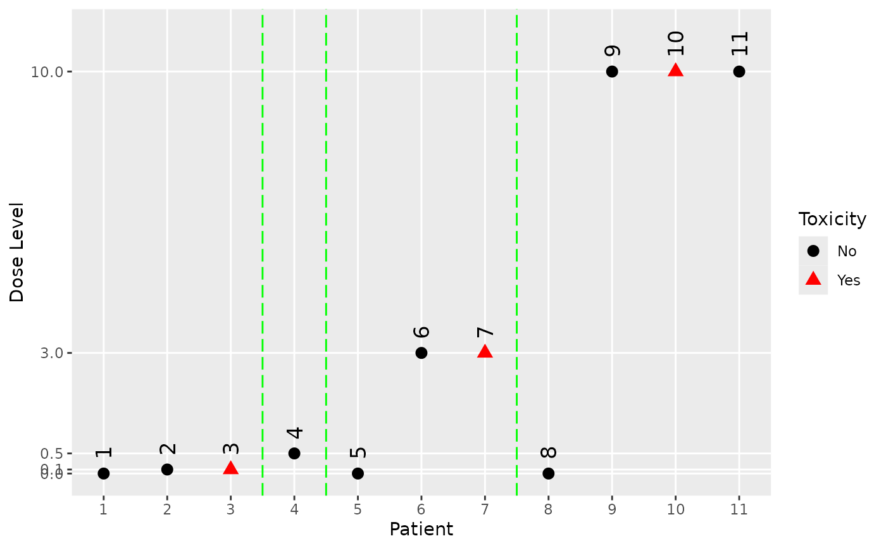
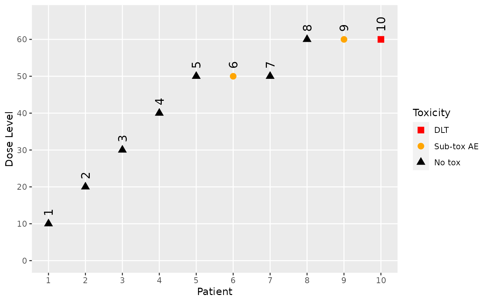

Helper Function for the Plot Method of the Data and DataOrdinal Classes
Source:R/helpers_data.R, R/Data-methods.R
plot-Data.Rd![[Stable]](figures/lifecycle-stable.svg)
A method that creates a plot for Data and DataOrdinal objects.
A method that creates a plot for Data object.
![[Experimental]](figures/lifecycle-experimental.svg)
A method that creates a plot for DataOrdinal object.
Usage
h_plot_data_dataordinal(
x,
blind = FALSE,
legend = TRUE,
tox_labels = c(Yes = "red", No = "black"),
tox_shapes = c(Yes = 17L, No = 16L),
...
)
# S4 method for class 'Data,missing'
plot(x, y, blind = FALSE, legend = TRUE, ...)
# S4 method for class 'DataOrdinal,missing'
plot(
x,
y,
blind = FALSE,
legend = TRUE,
tox_labels = NULL,
tox_shapes = NULL,
...
)Arguments
- x
(
DataOrdinal)
object we want to plot.- blind
(
flag)
indicates whether to blind the data. IfTRUE, then placebo subjects are reported at the same level as the active dose level in the corresponding cohort, and DLTs are always assigned to the first subjects in a cohort.- legend
(
flag)
whether the legend should be added.- tox_labels
(
named list of character)
the labels of the toxicity categories.- tox_shapes
(
names list of integers)
the symbols used to identify the toxicity categories.- ...
not used.
- y
(
missing)
missing object, for compatibility with the generic function.
Note
The default values of tox_shapes and tox_labels result in DLTs
being displayed as red triangles and other responses as black circles.
With more than 9 toxicity categories, toxicity symbols must be
specified manually.
With more than 5 toxicity categories, toxicity labels
must be specified manually.
Examples
# Create some data of class 'Data'.
my_data <- Data(
x = c(0.001, 0.1, 0.1, 0.5, 0.001, 3, 3, 0.001, 10, 10, 10),
y = c(0, 0, 1, 0, 0, 0, 1, 0, 0, 1, 0),
cohort = c(1, 1, 1, 2, 3, 3, 3, 4, 4, 4, 4),
doseGrid = c(0.001, 0.1, 0.5, 1.5, 3, 6, seq(from = 10, to = 80, by = 2)),
placeb = TRUE
)
#> Used default patient IDs!
# Plot the data.
plot(my_data)

data <- DataOrdinal(
x = c(10, 20, 30, 40, 50, 50, 50, 60, 60, 60),
y = as.integer(c(0, 0, 0, 0, 0, 1, 0, 0, 1, 2)),
ID = 1L:10L,
cohort = as.integer(c(1:4, 5, 5, 5, 6, 6, 6)),
doseGrid = c(seq(from = 10, to = 100, by = 10)),
yCategories = c("No tox" = 0L, "Sub-tox AE" = 1L, "DLT" = 2L),
placebo = FALSE
)
plot(data)
